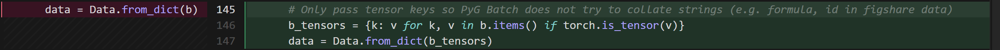
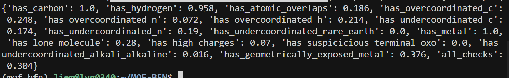
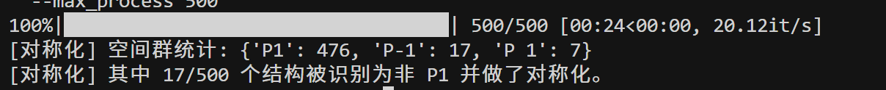
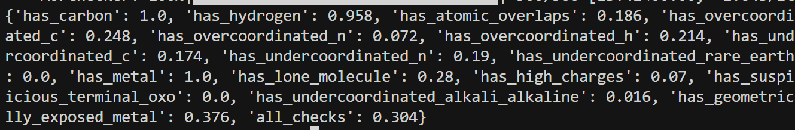
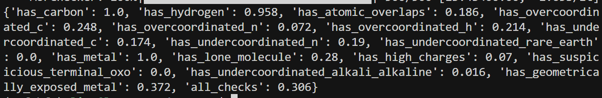

3-7-repo
论文原代码复现¶
- 去除数据中的过剩字符串

- 开始训练
cd /home/liem/MOF-BFN
export PYTHONPATH=.
export LD_LIBRARY_PATH="${HOME}/.local/share/mamba/envs/mof-bfn/lib:${LD_LIBRARY_PATH}"
export CUDA_VISIBLE_DEVICES=3,4,5,6
mkdir -p logs
nohup python experiments/train.py \
experiment.num_devices=4 \
experiment.wandb.name=dng_from_scratch \
experiment.trainer.strategy=ddp \
> logs/dng_from_scratch.log 2>&1 &
loss曲线分析¶


1. val_type_loss (类型分类验证损失)¶
- 绿色 (原论文): 表现为高频震荡，但底部始终压在 0 附近。这种形状通常意味着模型在大多数样本上已经找准了方向，只有少数困难样本引起了波动。
- 橙色 (修改后): 震荡幅度极大，且整体中值抬高到了 500-600。
- 分析: 我的修改可能破坏了分类层（Type Classifier）的特征提取，或者分类损失函数（如 CrossEntropy）的权重设置得太低，导致模型对物体类型的判断能力大幅下降。
2. val_rot_loss (旋转矩阵/角度验证损失)¶
- 绿色 (原论文): 初始值在 1.2 左右，迅速下降并在 50k 步后稳定在 0.4 附近，曲线非常平滑。
- 橙色 (修改后): 初始值高达 2.5，虽然有下降趋势，但在 50k 步时仍停留在 1.0 以上。
3. val_lattice_loss (晶格参数验证损失)¶
- 绿色 (原论文): 表现极佳，从 8 迅速跌至 0.5 以下，几乎完全收敛。
- 橙色 (修改后): 这是一个巨大的异常点。Loss 始终在 280 - 380 之间徘徊。
4. val_coord_loss (坐标预测验证损失)¶
- 绿色 (原论文): 从 10 平滑下降到 4.5 左右。
- 橙色 (修改后): 虽然曲线形状相似，但最终停留在 9.5 附近。
- 分析: 坐标预测依赖于局部的几何特征。橙色的收敛速度明显慢于绿色，且精度损失了近一倍，说明修改后的模型对局部空间位置的感知能力减弱。
5. train_type_loss_step (训练类型损失步进)¶
- 绿色 (原论文): 在极短时间内（约 20k 步）就收敛到了趋于 0 的位置，几乎没有噪声。
- 橙色 (修改后): 存在大量极高的尖峰（高达 50000），且直到 50k 步依然不稳定。
- 分析: 这说明训练过程极其不稳定。高尖峰通常意味着梯度爆炸或者学习率过高。由于训练集都无法压低这个损失，说明模型在最基础的分类任务上都遇到了严重的梯度传导障碍
#/home/liem/data/mofbfn/checkpoints/logs/mof-csp/dng_from_scratch/ckpt/epoch_673-step_192764-loss_14.5719.ckpt
export LD_LIBRARY_PATH=/home/liem/.local/share/mamba/envs/mof-bfn/lib:$LD_LIBRARY_PATH
PYTHONPATH=. python -m experiments.infer \
experiment.wandb.name=infer_dng_test \
inference.ckpt_path=/home/liem/data/mofbfn/checkpoints/logs/mof-csp/dng_from_scratch/ckpt/epoch_673-step_192764-loss_14.5719.ckpt \
inference.inference_dir=/home/liem/MOF-BFN/infer_results_test_3_7
python -m postprocess.assemble \
--res_path /home/liem/MOF-BFN/infer_results_test_3_7/raw_results.pt \
--bb_z_path /home/liem/data/mofbfn/datasets/dng/bb_emb_space_tot_z.pt \
--bb_blocks_path /home/liem/data/mofbfn/datasets/dng/bb_emb_space_tot_blocks_processed.lmdb \
--max_process 500
# 检查连通性 (是否形成了完整的 3D 骨架)
python -m evaluation.connect_check \
--res_path /home/liem/MOF-BFN/infer_results_test_3_7/raw_results.pt \
--bb_z_path /home/liem/data/mofbfn/datasets/dng/bb_emb_space_tot_z.pt \
--bb_blocks_path /home/liem/data/mofbfn/datasets/dng/bb_emb_space_tot_blocks_processed.lmdb \
--max_process 500
#有效性检查 (Validity Check)
python -m evaluation.validity_check \
--res_path /home/liem/MOF-BFN/infer_results_test_3_7/samples \
--max_process 500
- connect_check = 0.878

进一步优化思路：MOF-BFN 对称性约束优化¶
当前代码仅有隐含的对称性处理（分数坐标 + Bingham 旋转），没有显式的空间群/Wyckoff 约束；生成 CIF 时统一写为 P 1。引入显式对称性约束能直接改善有效性、孔隙/密度一致性、收敛速度和性质预测。
| 现状描述 | 代码位置说明 |
|---|---|
| 分数坐标 (Fractional) | crysbfn_bhm_module.py：cart_to_frac_coords → frac_coords 送入 BFN |
| Bingham 处理旋转 | crysbfn.py / crysbfn_bhm.py：rot_vecs（四元数）对应旋转分布 |
| 无空间群预测/约束 | 全代码无 space_group / wyckoff；采样为 N 个 block 独立坐标 |
| 输出统一 P1 | CifWriter(pred_structure) 时 pymatgen 对无对称信息结构默认 P1 |
阶段一：后处理对称化¶
- 在
postprocess/assemble.py写 CIF 之前，插入一步：先对称化再写，观察validity 与孔隙/性质是否提升
# 写 CIF 前先对称化，减轻对称性破缺以提升 validity/弛豫稳定性
if getattr(args, 'symmetrize', True):
pred_structure, sg_symbol = symmetrize_structure(
pred_structure,
symprec=getattr(args, 'symprec', 0.05),
angle_tolerance=getattr(args, 'angle_tolerance', 5.0),
)
space_groups.append(sg_symbol)
# 分数坐标舍入可减轻浮点噪声，对 P1 或高对称结构都有帮助
if getattr(args, 'round_frac_digits', 0) > 0:
pred_structure = round_frac_coords(
pred_structure, digits=args.round_frac_digits
)
# Write predicted structure
writer = CifWriter(pred_structure)
sample_dir = os.path.join(os.path.dirname(args.res_path), 'samples')
os.makedirs(sample_dir, exist_ok=True)
writer.write_file(os.path.join(sample_dir, f'pred_{i}.cif'))
# 对称化时打印空间群统计：若几乎全是 P 1，则 get_symmetrized_structure 不会改坐标，可尝试 --symprec 0.1
if getattr(args, 'symmetrize', True) and space_groups:
sg_counts = Counter(space_groups)
n_p1 = sg_counts.get("P 1", 0) + sg_counts.get("P1", 0)
n_total = len(space_groups)
print(f"[对称化] 空间群统计: {dict(sg_counts)}")
if n_p1 == n_total:
print(f"[对称化] 全部为 P1 → 未对坐标做对称变换。可尝试 --symprec 0.1 或 0.2 看是否有结构被识别为高对称。")
else:
print(f"[对称化] 其中 {n_total - n_p1}/{n_total} 个结构被识别为非 P1 并做了对称化。")

- connect_check = 0.878

- 修改后结果没有任何改变
python -m postprocess.assemble \
--res_path /home/liem/MOF-BFN/infer_results_test_3_7/raw_results.pt \
--bb_z_path /home/liem/data/mofbfn/datasets/dng/bb_emb_space_tot_z.pt \
--bb_blocks_path /home/liem/data/mofbfn/datasets/dng/bb_emb_space_tot_blocks_processed.lmdb \
--max_process 500 \
--round_frac_digits 5
- connect_check = 0.878

对坐标的微调对结果有少量提升，但是微乎其微。
阶段二: Symmetry-Aware Conditioning¶
-
思路：不改变“预测 N 个 block 的坐标”的范式，只在 BFN 的输入中把空间群作为条件。
-
实现要点：
- 数据：在
data/dataset.py或 dataloader 中从 CIF/Structure 用 pymatgen 解析structure.get_space_group_info()，得到空间群编号或 one-hot，加入batch（如batch.space_group_id）。 - 模型：在
CSPNet的输入或CrysBFN的loss_one_step所用特征里，拼接空间群 embedding。
export PYTHONPATH=.
export LD_LIBRARY_PATH="${HOME}/.local/share/mamba/envs/mof-bfn/lib:${LD_LIBRARY_PATH}"
export CUDA_VISIBLE_DEVICES=6,7
nohup python experiments/train.py \
experiment.num_devices=2 \
experiment.wandb.name=dng_sg_condition \
experiment.trainer.strategy=ddp \
> logs/dng_sg_condition.log 2>&1 &
具体修改¶
- 数据：
data/dataloader_ori.py、data/dataset.py— 增加space_group字段。 - 模型：
models/crysbfn_bhm.py、crysbfn/pl_modules/crysbfn.py— 接收space_group条件；若做 Wyckoff 采样，需新分支或新 head 输出等价集与坐标。 - 推理/后处理：
models/crysbfn_bhm_module.py的采样与写 CIF 处；postprocess/assemble.py— 对称化或 Wyckoff 展开。 - 评估：
evaluation/validity_check.py、evaluation/property.py— 增加“对称性满足程度”的统计以及 validity/PSD/ASA/性质对比。

目前看起来效果不错，整体loss（棕色线）比源代码（绿色线）要好看一些，期待明天早上的结果。